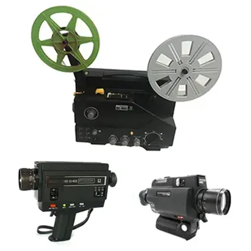
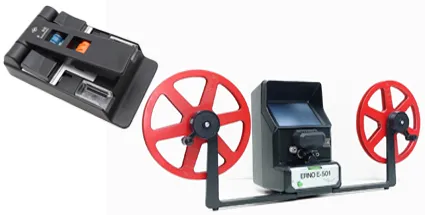
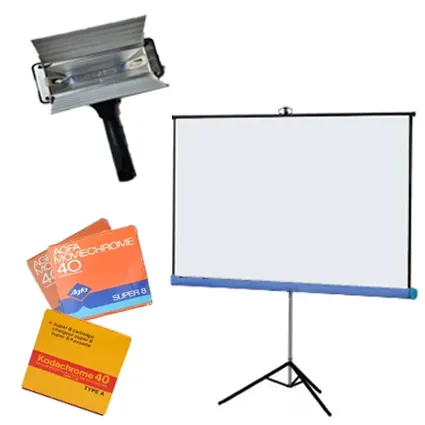

RODAR EN SUPER 8 EN 1981
Internet, los ordenadores personales, el vídeo doméstico e incluso los teléfonos móviles ya existían, aunque de forma primigenia, rudimentaria y, desde luego, lejos del alcance de la mayoría. Por eso, visto desde la perspectiva actual, rodar una película era una auténtica odisea. El Super 8, versión mejorada del antiguo 8 mm y de otros formatos cinematográficos domésticos anteriores, no era precisamente barato y además ofrecía muy poca flexibilidad. Un cartucho de 15 metros —unos tres minutos de filmación, dependiendo de si se rodaba a 18 fotogramas por segundo (lo habitual cuando no había sonido) o a 24 imágenes por segundo (cuando se utilizaba película sonora)— suponía un gasto considerable para unos estudiantes de 15 y 16 años.

Proyector y cámaras o tomavistas
A diferencia de la actualidad, donde cualquier teléfono móvil permite grabar horas de vídeo sin coste adicional, en 1981 cada segundo filmado tenía importancia. No existía la posibilidad de repetir tomas indefinidamente ni comprobar inmediatamente el resultado. La película debía enviarse a revelar y, en Canarias, lo mínimo era esperar dos o tres semanas antes de descubrir si las imágenes habían salido correctamente o si algún error técnico había arruinado parte del material, algo bastante habitual. Sin embargo, precisamente ahí residía parte de la magia: la emoción de acudir al comercio donde se había enviado la película, recoger las bobinas reveladas, llevarlas a casa, colocarlas en el proyector y descubrir por primera vez el resultado de tantos días de espera.

Empalmadora con sus repuestos y moviola
Además del coste de la película y del revelado (que ya estaba incluído en el precio), había que añadir el de las cámaras, focos, proyectores, trípodes, empalmadoras y otros accesorios necesarios para rodar, montar y finalmente exhibir las películas. Todo ello convertía el cine amateur en una actividad artesanal, lenta y costosa, pero también profundamente emocionante para quienes soñaban con hacer cine.
Existían principalmente tres grandes marcas fabricantes de película Super 8: Kodak, Agfa y Fuji Film. Kodak ofrecía una excelente calidad de color y era especialmente adecuada para rodajes en interiores o situaciones de poca luz. Agfa, por su parte, resultaba algo más económica y además ofrecía una solución intermedia entre la película muda y la sonora: la película con banda magnética incorporada. Este sistema no permitía registrar sonido directo durante el rodaje, pero sí añadir posteriormente diálogos, música o efectos sonoros durante el proceso de edición y montaje. Para muchos cineastas aficionados suponía una alternativa mucho más asequible que la película sonora profesional, cuyo coste era considerablemente más elevado.

Foco, pantalla y películas virgenes